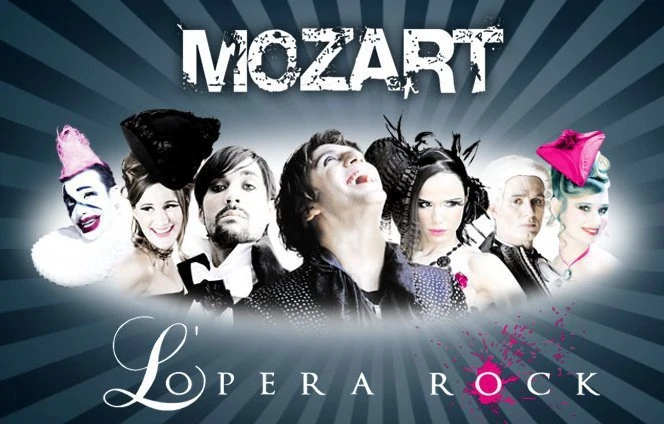
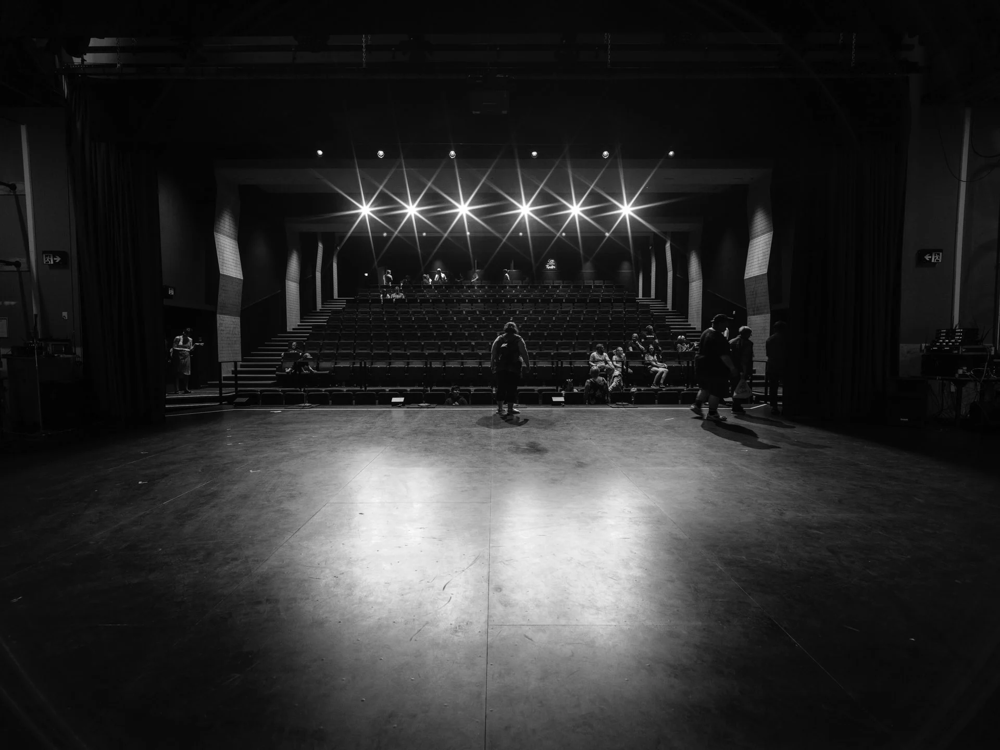

A musical isn't High School Musical, it's a musical play where music, dance and acting give a mean at the scene. It could be dramatic, classic, funny. It first appeared in 1285 with Jacques Bretel, a french writter

My Favorite musicals :
- Le Roi Soleil written by Dove Attia et Albert Cohen (2005)
- Grease from Jim Jacobs et Warren Casey (1972)
- 1798 : Les amants de la Bastille by Dove Attia, Albert Cohen et François Chouquet (2012)
- Mozart l'Opéra Rock also written by Dove Attia and Albert Cohen
- Notre-Dame de Paris adapting from the original roman from Victor Hugo (1998)

Between acting, music and dancing 🥰
The symbiosis of music and dance is already wonderful like in opera. However, with acting you put the stage in an other dimension and fully entertain onlookers with a guideline